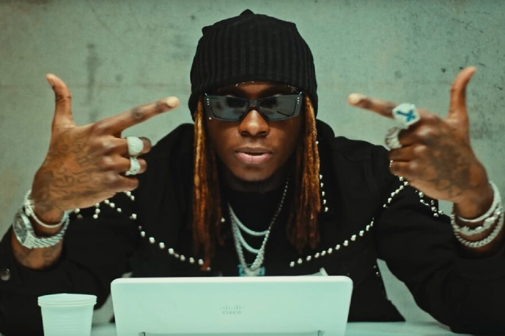
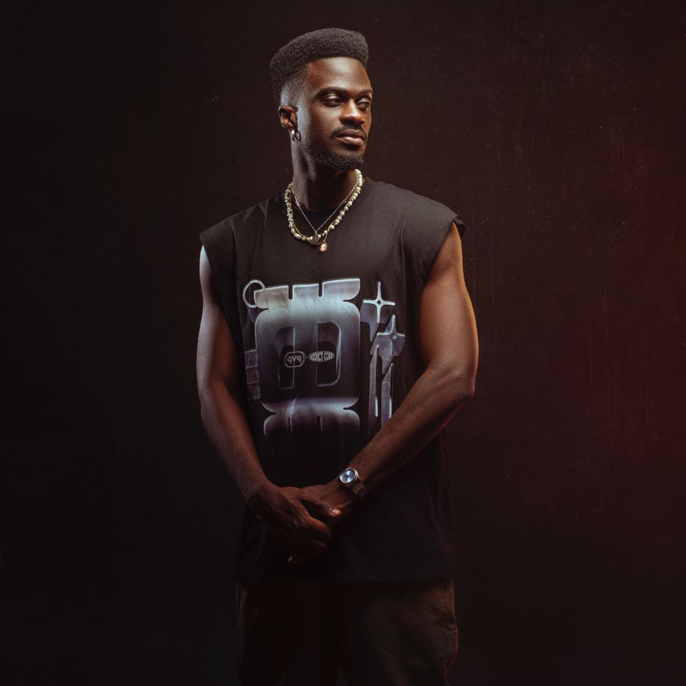
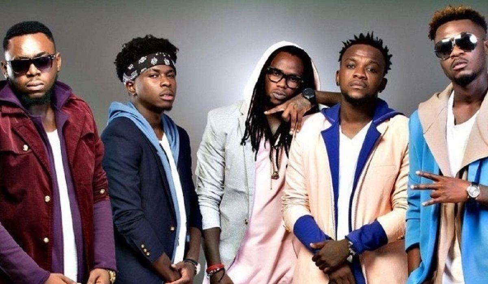
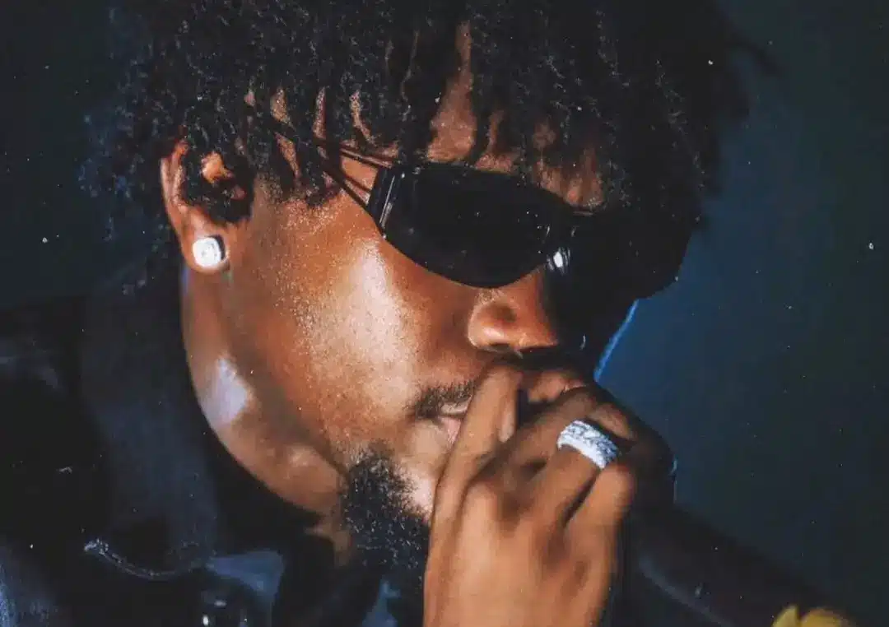
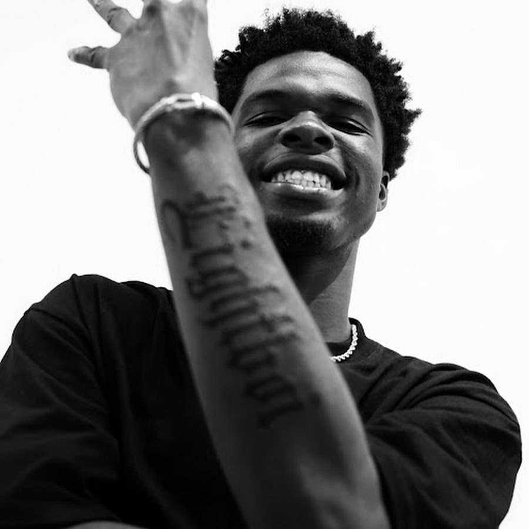

Il s'agit de quelques artistes que je considère importants dans ce milieu rap.

Didi B, de son vrai nom Bassa Zéréhoué Diyilem, est un rappeur, chanteur et compositeur ivoirien né le 3 avril 1992 à Abidjan, en Côte d’Ivoire universalmusic.fr. Issu d’une famille d’artistes (un père pianiste et comédien, et une mère chorégraphe), il grandit dans un environnement créatif qui façonne dès l’enfance son univers musical. Aujourd’hui figure de proue du rap ivoire (hip-hop ivoirien), Didi B s’est imposé comme l’un des artistes francophones les plus en vue de sa génération, grâce à un style mêlant hip-hop et influences locales, ainsi qu’une vision entrepreneuriale moderne. Il a su conquérir le public ivoirien et au-delà, en collaborant avec des artistes internationaux et en participant à des projets musicaux d’envergure. Son parcours exemplaire témoigne de sa passion pour la musique et de son engagement envers la culture ivoirienne.

Himra est l’une des figures majeures du rap ivoirien contemporain. De son vrai nom Abdul Rahim Souleymane Bakayoko, il est devenu le visage d’une drill ivoirienne dure, populaire et très identifiée à la jeunesse urbaine d’Abidjan. Les recherches Google autour de son nom portent surtout sur son âge, son vrai nom, son origine, ses albums et son ascension dans le rap. Révélé progressivement par ses mixtapes, ses clips et son identité sonore, Himra a pris une dimension nationale avec l’album Jeune & Riche. Des sources comme Le Monde, Apple Music et Boomplay soulignent son rôle dans la popularisation d’un style souvent décrit comme “nouchi hardcore”, mélange de drill, de rap francophone et d’argot ivoirien.

Suspect 95, de son vrai nom Guy Ange Emmanuel, voit le jour le 15 août 1995 à Abidjan en Côte d’Ivoire. Passionné de jeux vidéo dans sa jeunesse, il emprunte son pseudonyme « Suspect » à un personnage d’un jeu dont il était fan, et y ajoute « 95 » pour son année de naissance. Dès l’adolescence, il se fait remarquer dans les couloirs du lycée grâce à des freestyles percutants et des textes rap pleins de verve satirique, souvent en nouchi (argot ivoirien). Élève studieux (titulaire d’un bac série C), il participe à des battles de rap à l’école et remporte à plusieurs reprises des concours de freestyle, révélant un talent précoce newstoriesafrica.com. Ces performances scolaires l’amènent à être repéré tôt par l’arrangeur Bebi Philip, figure de la musique ivoirienne, qui l’invite en 2015 à poser un couplet sur le single « Demain t’appartient » – un titre prônant la paix en Côte d’Ivoire afrique-sur7.fr. Cette collaboration lui ouvre les portes d’une tournée (Caravane de la paix), durant laquelle le jeune rappeur impressionne par son aisance scénique et sa capacité d’improvisation. Fort de ce début prometteur, Suspect 95 enregistre en 2015 son propre morceau « Au nom de quel amour », qu’il considère d’abord comme un essai mais qui rencontre un franc succès populaire.

Kiff No Beat est un groupe de rap ivoirien originaire d’Abidjan, formé en 2009. Composé de cinq membres (Didi B, Black K, Elow’n, Joochar et El Jay), ce collectif a su apporter un souffle nouveau au hip-hop ivoirien en mélangeant rap, R&B, reggae et dancehall dans un style éclectique baptisé “Dirty Décalé”. Considéré comme un groupe pionnier, Kiff No Beat a véritablement révolutionné le rap en Côte d’Ivoire et même en Afrique, s’imposant rapidement comme le leader du mouvement rap ivoire.
Kiff No Beat naît en 2009 de la fusion de deux groupes rivaux de hip-hop abidjanais, les KNB (Kiff No Beat original) et les Jekboys. Le groupe réunit alors Gnahoré Okou Camille (alias Black K), N’wolé Brice (alias Elow’n) et Bassa Zéréhoué Diyilem (alias Didi B) d’un côté, et de l’autre Kouakou Jonathan (alias Joochar) et Konan Franck Guy (alias El Jay) provenant des Jekboys. À peine âgés d’une vingtaine d’années, ces cinq amis partagent la même passion pour le rap et comprennent vite que s’unir en un seul groupe les rendrait plus forts. Dès leurs premières sessions ensemble en studio, la chimie opère et Kiff No Beat voit le jour, prêt à bousculer la scène musicale ivoirienne.
Kiff No Beat s’exporte au-delà des frontières ivoiriennes. Le groupe entame des tournées en Afrique (Sénégal, Gabon, Cameroun…) mais aussi se produit aux États-Unis et en Europe, où sa réputation commence à attirer l’attention de la diaspora et des médias spécialisés. En mars 2017, fort de plus de 8 ans de carrière, Kiff No Beat signe chez Universal Music Africa, une première pour un groupe ivoirien à l’époque. Cette signature avec une major internationale s’accompagne de la sortie du single à succès « Pourquoi tu DAB » sous le label Universal. Deux ans plus tard, le groupe livre l’album « Bledard Is The New Fresh » (2019), son premier album en major, qui inclut « Pourquoi tu DAB » ainsi que des collaborations de prestige avec des artistes tels que Dadju, Sofiane ou Kaaris. Des morceaux comme « Yaka Dormir » ou « Yahh » tirés de cet album deviennent à leur tour des hits qui renforcent l’aura internationale de Kiff No Beat. Après près d’une décennie d’activité, le groupe s’est imposé comme un incontournable du rap africain, alliant succès commerciaux et crédibilité artistique. Aujourd'hui séparés, le groupe continue quand même d'avancer en faisant des quelques sorties et des prestsations qui rassemblent non seulement leurs fans mais aussi le public rap ivoirien.
Ce sont les jeunes talents qui s'imposent dans le paysage musical ivoirien.À travers leurs styles qui sont variés et uniques.

TRK, surnommé le « Golden Boy », est un rappeur ivoirien d’Abidjan, signé chez Diby Production, qui a explosé sur la scène musicale en 2024 avec son EP B4 ROTY et a rapidement conquis les charts et réseaux sociaux. TRK compose depuis le lycée, mais sa carrière professionnelle date de seulement deux ans. Il a été repéré et signé par Diby Production, label fondé par le rappeur Didi B pour développer de nouveaux talents. Son ascension rapide témoigne de son talent et de sa détermination à s’imposer dans le paysage musical ivoirien. TRK est à la fois un révélateur et un symbole de l’évolution du rap ivoirien : un artiste qui combine travail, stratégie digitale et authenticité, et qui, par son style et ses projets, contribue à enrichir et diversifier la scène musicale ivoirienne.

Dopelym (Lorou Yoan Melvyn), alias Døpelym ou Dope, est un artiste franco‑ivoirien de rap, né à Levallois‑Perret et actif sur la scène musicale ivoirienne, reconnu pour un style hybride mêlant afro‑trap, drill et rythmes ivoiriens, et pour un impact croissant sur la visibilité du rap ivoirien. Il est perçu comme une figure montante, capable de fédérer une audience jeune et engagée, et de représenter la musique urbaine ivoirienne sur les réseaux sociaux et les grandes scènes. Dopelym est à la fois un artiste en construction, un symbole générationnel et un acteur clé de la montée du rap ivoirien, combinant authenticité, hybridité musicale et présence internationale.

OG Mahilet est un rappeur ivoirien né à Marcory, actif depuis 2019, reconnu pour son style trap mêlé de pop, son flow percutant et son credo “Union, Discipline” qui lui a valu une place croissante dans la scène urbaine d’Abidjan. OG Mahilet a commencé par le rap à travers un freestyle au collège, motivé par un défi personnel et une passion pour le hip‑hop. l a choisi la trap, influencé par des années d’écoute intensive de ce style, et a développé un univers sonore qu’il appelle “Marcory trapshit”. Sa carrière officielle débute en 2019, avec des sorties régulières et des collaborations avec des figures du rap ivoirien comme Didi B, Tripa Gninnin, Himra et Widgunz. Il s’est imposé grâce à un flow technique, des textes marqués et une image artistique cohérente. OG Mahilet est passé d’un artiste émergent à une figure influente du rap ivoirien, grâce à un parcours marqué par la discipline, une discographie en expansion et un style qui mêle authenticité et innovation.

Zrai, de son vrai nom Ameka Samuel, est un rappeur ivoirien originaire de Gagnoa, installé à Yopougon, qui s’impose comme une figure émergente du rap ivoirien grâce à un style singulier mêlant “Ivoire Pop” et des influences urbaines, avec un impact croissant sur la scène musicale et culturelle.Fondateur du collectif MF Cartel Vibe, Zrai est aussi connu sous les pseudonymes Le Zrai ou Kpakpazrai, surnom issu de ses jeux d’enfance. Il collabore avec des artistes comme Ben J, Widgunz, GNAKOO ou Didi B sur le titre collectif NAS. En solo, ses morceaux comme Tsunami ou Ako illustrent son identité artistique : flow incisif, diction précise, énergie sur scène et textes ancrés dans la réalité ivoirienne. Zrai qualifie son style de “Ivoire Pop” : mélange de Nouchi (langue populaire ivoirienne) et d’instrumentales à l’américaine. Il alterne rap, afrotrap, drill et mélodies introspectives, et rappe en français, nouchi et dialectes locaux. Pour lui, le rap est un “cri de vérité” et un miroir des réalités de la rue.Zrai est devenu un artiste incontournable du rap ivoirien, alliant authenticité, innovation stylistique et engagement social, avec un impact qui dépasse la musique pour toucher la culture urbaine et la communauté ivoirienne.
En conclusion, le rap ivoirien est un univers riche et diversifié, où se côtoient des artistes majeurs et émergents qui contribuent à façonner la scène musicale du pays. Des figures emblématiques comme Didi B, Himra, Suspect 95 et Kiff No Beat ont ouvert la voie, tandis que de jeunes talents tels que TRK, Dopelym, OG Mahilet et Zrai apportent un souffle nouveau et innovant. Ensemble, ils illustrent la vitalité et la créativité du rap ivoirien, qui continue de captiver les auditeurs tant au niveau national qu’international. Le rap ivoirien est bien plus qu’un simple genre musical ; il est le reflet d’une culture dynamique et en constante évolution.
Ainsi, se termine ma page web, j'espère que vous avez apprécié cette exploration du rap ivoirien selon moi. MERCI !!!!